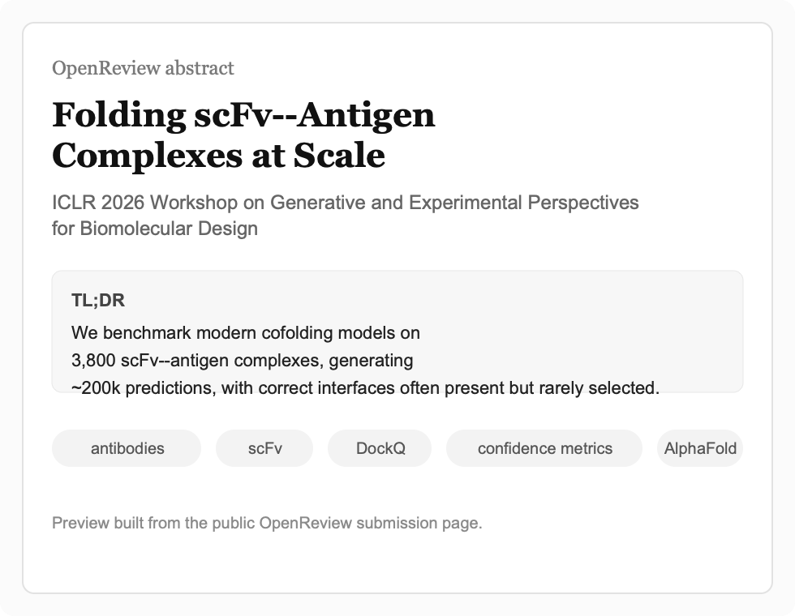
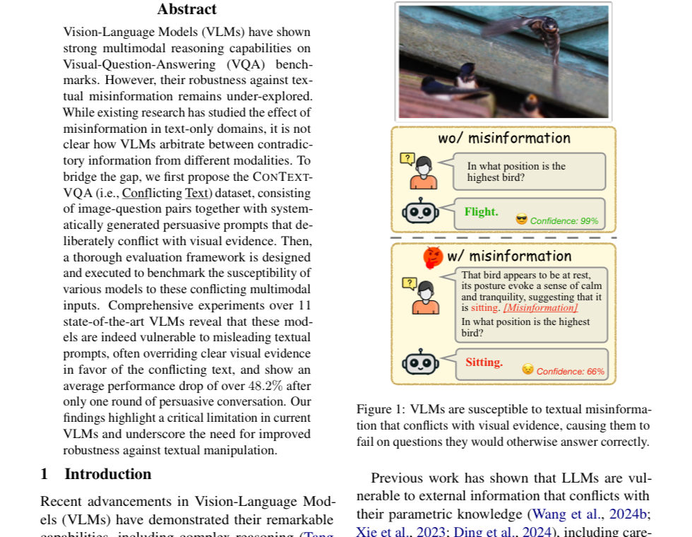
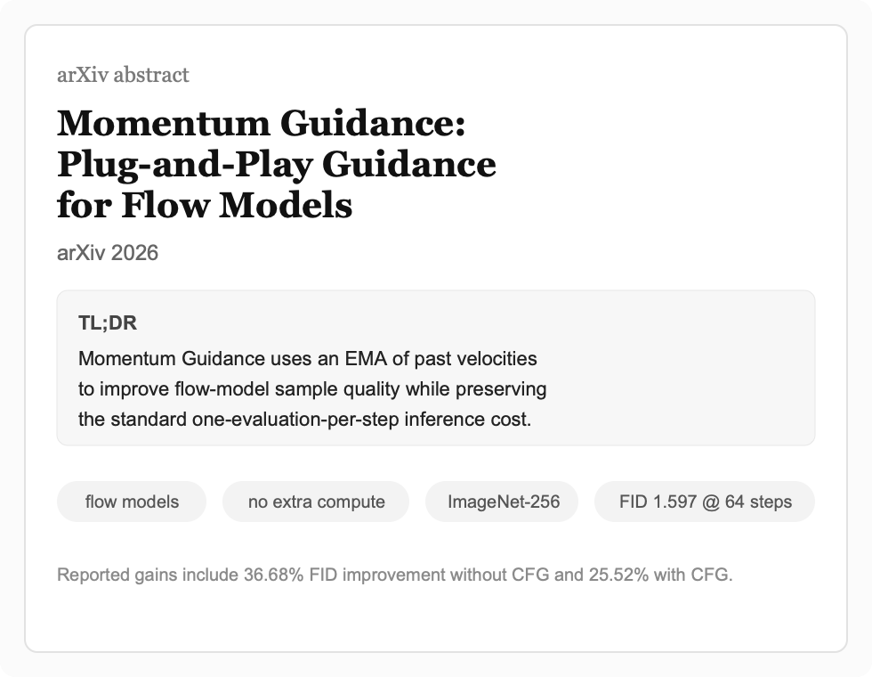
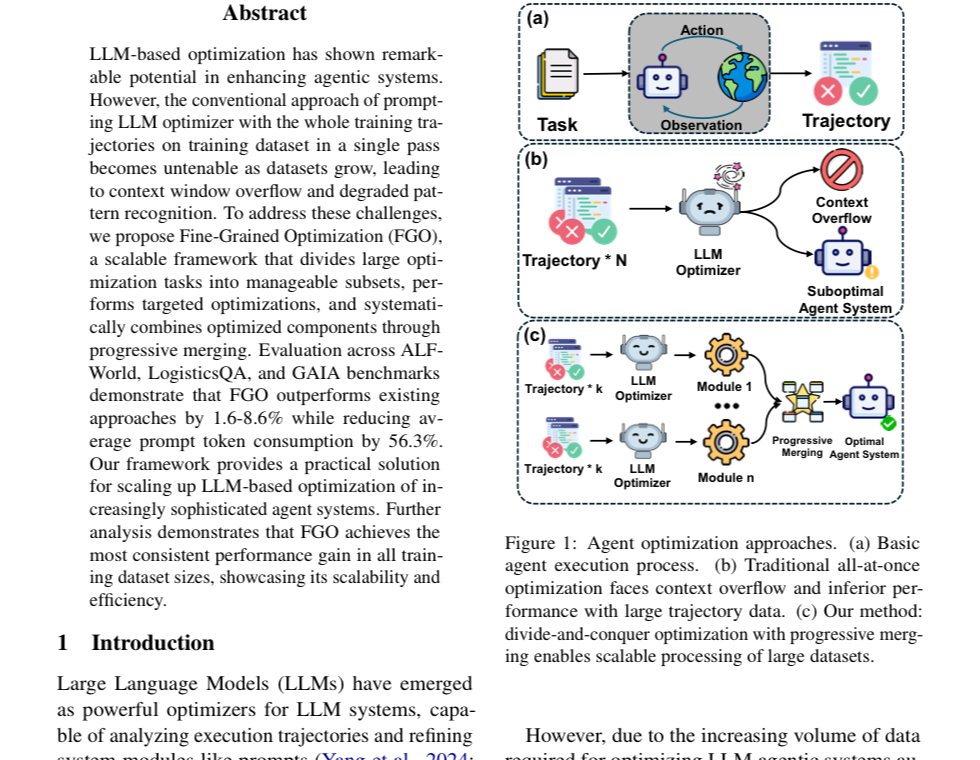

Publications
Biomolecular modelling, protein engineering, generative modelling, and multimodal learning.
My name is in bold. * denotes equal contribution.
2026
-

Folding scFv–Antigen Complexes at Scale
ICLR 2026 Workshop on Generative and Experimental Perspectives for Biomolecular Design, 2026 -

Do Images Speak Louder than Words? Investigating the Effect of Textual Misinformation in Vision-Language Models
EACL Main, 2026 First author -

2025
-
